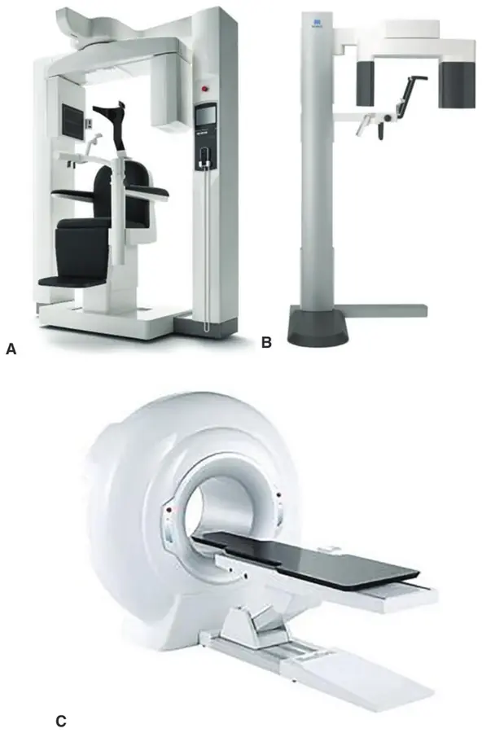
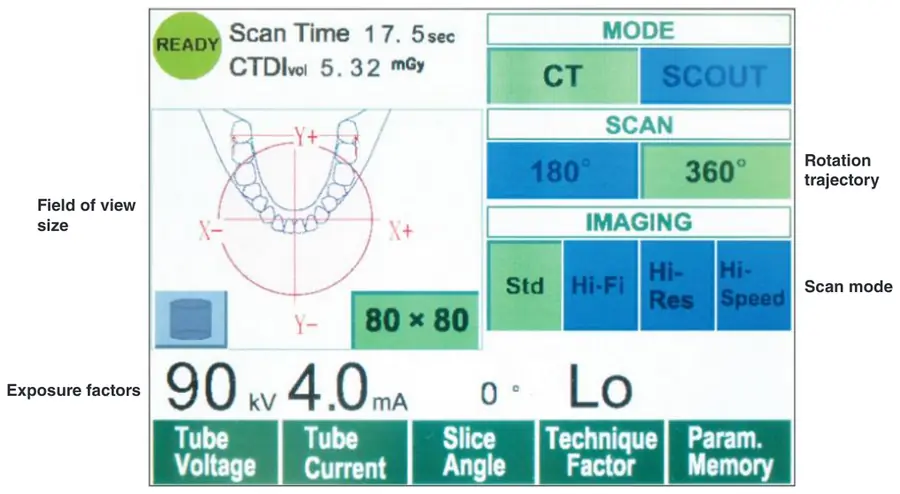

نسخه استخراجشده؛ ترجمه یا تأیید علمی انجام نشده است. وضعیت: captured
CBCT از جای دیگری آمد: «در اصل برای آنژیوگرافی در اوایل دههی ۱۹۸۰ توسعه یافت و سپس در دیگر رشتههای پزشکی — مانند رادیوتراپی و ماموگرافی — به کار رفت.» و به دندانپزشکی دیر رسید: «نخستین واحدهای دندانی و ماگزیلوفاسیال در اواخر دههی ۱۹۹۰ در اروپا و سپس در اوایل دههی ۲۰۰۰ در ایالات متحده تجاری شدند.»

و امروز بازارش گسترده است: «تقریباً ۵۰ سازندهی دستگاه CBCT دندانی با بیش از ۲۰۰ مدل در دسترس.» و علت گسترشش روشن است: «کاهش بها و ردپای فیزیکی کوچک» که آن را به «یک روش تصویربرداری درونمطبی» تبدیل کرده است.
و هندسهی کارش: «تصویربرداری CBCT با یک سکوی چرخان انجام میشود که پرتو و آشکارساز روی آن با فاصلهی ثابت از هم قرار دارند.» یک منبع پرتو هرمی یا مخروطی واگرا از میان ناحیهی مورد نظر میتابد و پرتو تضعیفشده روی یک آشکارساز سطحی در سمت مقابل میافتد.
و یک تفاوت بنیادی با MDCT که همهچیز را ساده میکند: «برخلاف MDCT، بیمار مورد تصویربرداری حرکت نمیکند.» منبع و آشکارساز گرد یک تکیهگاه چرخش میچرخند که «در مرکز ناحیهی مورد نظر ثابت است» — و همین تکیهگاه «مرکز حجم نهایی تصویربرداریشده» میشود.
و تصاویر پایه: در طول چرخش، «چند تصویر پروجکشن مسطح متوالی» در کمانی از ۱۸۰ درجه یا بیشتر گرفته میشود. این تصاویر «دادهی اولیهی خام» را میسازند و جداگانه تصویر پایه، فریم، یا تصویر خام نامیده میشوند.
و ظاهرشان جالب است: «تصاویر پایه مانند رادیوگرافیهای سفالومتریک به نظر میرسند، تنها هرکدام اندکی نسبت به بعدی جابهجا شده است.» معمولاً چند صد تصویر پایه وجود دارد، و کل مجموعه «دادهی پروجکشن» نامیده میشود.
و یک مصالحهی کلیدی که در سراسر CBCT تکرار میشود: «شمار پروجکشنها و فاصلهی زاویهای میانشان تعیینکنندههای مهم کیفیت تصویراند. افزایش شمار پروجکشنهای پایه کیفیت تصویر را بالا میبرد، ولی دوز پرتو بیمار را هم افزایش میدهد.» و صنعت از همین استفاده میکند: «بسیاری از دستگاهها پروتکلهای کمدوز را با کاهش شمار زوایای پروجکشن فراهم میکنند».
و چرا یک چرخش کافی است؟ «فقط یک توالی چرخشی گانتری با ۱۸۰ درجه یا بیشتر برای CBCT لازم است تا دادهی کافی برای ساخت تصویر حجمی به دست آید، چون کل میدان دید همزمان تابانده میشود.»
پیکربندی دستگاه: CBCTها میتوانند اختصاصی باشند یا هیبرید چندمودالیته — «که رادیوگرافی پانورامیک و سفالومتریک دیجیتال را با یک CBCT با FOV کوچک تا متوسط ترکیب میکنند».

و در بیشتر دستگاهها، منبع و آشکارساز روی یک بازوی C سوارند «که گرد یک محور ثابت در مرکز ناحیهی مورد نظر میچرخد». کمان چرخش «بهطور آرمانی ۳۶۰ درجه است ولی میتواند از ۱۸۰ تا ۲۷۰ درجه تغییر کند».
و برخی دستگاهها با آشکارساز کوچک، دو یا چند اسکن پیاپی میگیرند و داده را «ثبت و به هم میدوزند» تا FOV بزرگتری بسازند — «در این موارد، چرخش بیمار میتواند تا ۷۲۰ درجه یا بیشتر برسد».
و زمان اسکن: «بهطور میانگین حدود ۱۸ ثانیه (دامنهی ۵ تا ۵۵ ثانیه)، بسته به مدل و پروتکل انتخابی.» و یک تمایز مهم: «زمان اسکن فاصلهی میان نخستین و آخرین تصویر پایه است و با زمان اکسپوز — دورهای که بیمار واقعاً در معرض پرتوست — تفاوت دارد.»
و وضعیت بیمار — با آمار: «بیشتر دستگاهها (۸۰٪) بیمار را ایستاده اسکن میکنند، ۱۷٪ نشسته، و اندکی (۳٪) خوابیده.»
و هر وضعیت مصالحهی خودش را دارد: دستگاههای خوابیده «از نظر فیزیکی بزرگترند، ردپای بیشتری دارند، و ممکن است برای بیماران با برخی ناتوانیهای جسمی در دسترس نباشند»، دستگاههای ایستاده «ممکن است نتوانند بهاندازهی کافی پایین بیایند تا بیماران ویلچرنشین را جا دهند»، و دستگاههای نشسته «راحتتریناند، ولی ممکن است اجازهی اسکن بیماران ناتوان یا ویلچرنشین را ندهند».
و یک اصل عملی که بر همه مقدم است: «در همهی سامانهها، بیحرکت کردن سر بیمار مهمتر از وضعیتدهی اوست، چون هر حرکت سر تصویر نهایی را تخریب میکند.» ابزارش: ترکیبی از چینکاپ، بایت فورک، یا مهارکنندههای دیگر سر.
و پرتو CBCT بسیار سادهتر از MDCT است: بیشتر دستگاهها kVp قابل تنظیم (۸۰ تا ۱۲۰) و mA (۱ تا ۳۲) دارند، و «بیشترشان در انتهای پایین این دامنهها کار میکنند که تفاوت چندانی با پارامترهای دستگاه پانورامیک ندارد».
و دو تفاوت فنی مهم با MDCT: اندازهی لکهی کانونی CBCT (دامنهی اسمی ۰٫۱۵ تا ۰٫۷ میلیمتر) معمولاً کوچکتر از MDCT (۰٫۵ تا ۰٫۸ میلیمتر) است، ولی «برخلاف MDCT، در بیشتر سامانههای CBCT آند ثابت است».
و تولید پرتو، پیوسته یا پالسی؟ «تولید پرتو میتواند پیوسته باشد ولی اغلب پالسی است تا با فعالسازی و نمونهبرداری آشکارساز همزمان شود.» و مزیتش روشن است: «یعنی زمان واقعی اکسپوز میتواند بهمراتب کمتر از زمان اسکن باشد، که دوز پرتو بیمار را بهطور چشمگیری کاهش میدهد.»
و آشکارساز: «همهی دستگاههای امروزی CBCT از آشکارسازهای پنل تخت آرایهی دوبعدی استفاده میکنند.» اینها آشکارسازهای «غیرمستقیم»اند: یک پنل حالت جامد سطح بزرگ که به یک لایهی سینتیلاتور جفت شده. شایعترین پیکربندی: یدید سزیم روی یک ترانزیستور لایهنازک از سیلیکون آمورف. فوتودیودها «باری متناسب با انرژی پرتو فرودی» تولید میکنند.
و عمق بیت آشکارساز: «دامنهی سایههای خاکستری ثبتشده عمق بیت نامیده میشود و برای پنلهای تخت CBCT از ۸ بیت (۲۵۶ سایه) تا ۱۶ بیت (۶۵٬۵۳۶ سایه) است، با ۱۴ بیت (۱۶٬۳۸۴ سایه) بهعنوان شایعترین.»
و نرخ فریم: چون چرخش «در زمانی برابر یا کمتر از رادیوگرافی پانورامیک (از ۵ ثانیه تا حدود ۲۰ ثانیه)» انجام میشود، «هر تصویر پایه در میلیثانیه گرفته و ارسال میشود، و این چند صد بار در یک چرخش اکسپوز رخ میدهد». و «سرعتی که آشکارساز این اکتساب را انجام میدهد نرخ فریم نامیده میشود».